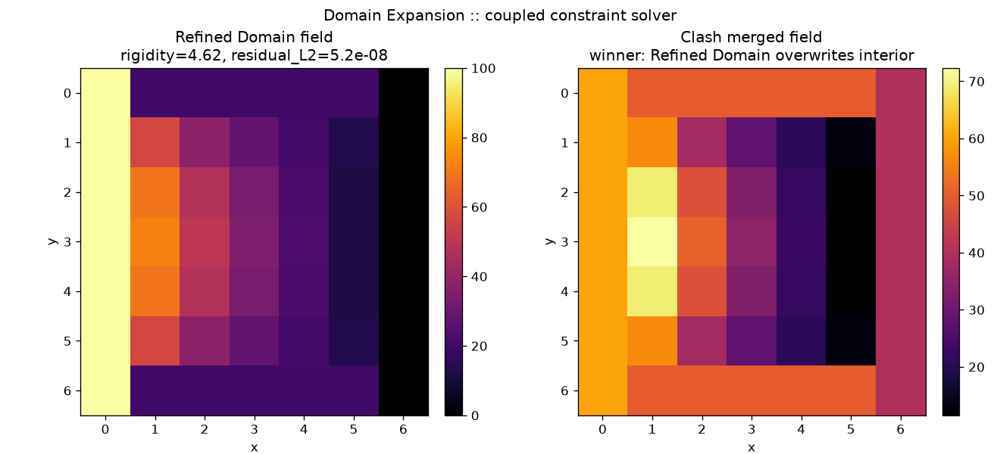

Domain Expansion as a Constraint Solver
Domain Expansion as a coupled constraint solver: power is the stability and well-posedness of the constraint system, measured by spectral radius.

The idea
In Jujutsu Kaisen, a Domain Expansion is a technique that floods a bounded region with a sorcerer’s cursed energy, guaranteeing that every attack within the domain lands. The show treats domains as absolute — a fully realised Domain always beats an incomplete one.
This package models a Domain as a Dirichlet boundary-value problem on a 7×7 grid: the boundary is pinned to “sure-hit” conditions, and the interior is solved by the Laplace equation. Power is the rigidity metric — the spectral radius proxy of the constraint system, plus a void bonus and minus a noise penalty.
Two solvers produce identical results: Gauss–Seidel relaxation and direct Gaussian elimination with partial pivoting. A clash simulation compares two domains and picks the winner by rigidity.
What is well-posedness?
The mathematical spine of this project is well-posedness, a notion due to Jacques Hadamard. A problem is well-posed when three conditions all hold: a solution exists, it is unique, and it depends continuously (stably) on the input data. Break any one of them and the problem is ill-posed — there may be no answer, several conflicting answers, or an answer so sensitive that an imperceptible change in the inputs sends it flying. That third condition, stability, is the one that matters most in practice: an ill-conditioned system technically has a unique solution, but noise swamps it.
A Dirichlet boundary-value problem for the Laplace equation — fix the values on the boundary, solve for a harmonic interior — is the textbook example of a well-posed problem. The solution exists, is unique, and varies smoothly with the boundary data. That is precisely why it is a good stand-in for a “sure-hit” Domain: a well-posed constraint system yields one definite, stable outcome everywhere inside the region.
The second concept is the contraction mapping. A map T is a contraction if it shrinks the distance between any two points by a fixed factor q < 1. The Banach fixed-point theorem then guarantees a single fixed point x* with T(x*) = x*, and that iterating T from any start converges to it, with error falling like qⁿ. Gauss–Seidel relaxation for the Laplace grid is exactly such an iteration — each sweep contracts the error — so it must converge to the unique solution, the same one direct Gaussian elimination computes. The two solvers agreeing to roughly 2.8 × 10⁻⁸ is the numerical fingerprint of a well-posed, contracting system.
Honest caveat: equating a Domain’s in-story “power” with the well-posedness and rigidity of a boundary-value problem is a deliberate, loose analogy, not anything from Jujutsu Kaisen. The rigidity metric (a spectral-radius proxy plus a void bonus minus a noise penalty) is a hand-built score chosen so that a cleaner, more stable constraint system wins — it is a modelling choice, not a physical law.
Domain Expansion questions
What does well-posedness mean?
In Hadamard’s sense a problem is well-posed if a solution exists, is unique, and depends continuously (stably) on the inputs. If any of the three fails — no solution, many solutions, or tiny input changes producing huge output changes — the problem is ill-posed. Here a Domain’s “power” is how well-posed and stable its constraint system is.
How does the model represent a Domain Expansion?
As a Dirichlet boundary-value problem on a 7×7 grid: the boundary ring is pinned to “sure-hit” values and the interior is solved by the Laplace equation. A rigidity metric — a spectral-radius proxy plus a void bonus minus a noise penalty — scores each domain, and the more rigid, better-posed domain wins the clash.
What is a contraction mapping and why does the solver converge?
A contraction is a map that brings points strictly closer together by a factor below 1. The Banach fixed-point theorem guarantees it has a unique fixed point that repeated iteration converges to. Gauss–Seidel relaxation is such an iteration for the Laplace system, so it converges to the same solution as direct Gaussian elimination — here they agree to about 2.8 × 10⁻⁸.
The mathematics
Grid: 7 × 7 = 49 cells, interior 5 × 5 = 25 unknowns Laplace equation: ∇²u = 0 (interior) Dirichlet boundary: u = 1.0 (sure-hit ring) Two solvers: Gauss-Seidel relaxation: iterative, converges to 1e-8 Gaussian elimination (partial pivot): direct, exact to 1e-12 → Solvers agree to ~2.8 × 10⁻⁸ Rigidity metric: R = spectral_radius_proxy(A) + void_bonus - noise_penalty Clash results: Refined domain (coupling=1.0, noise=0): R = 4.618 Crude domain (coupling=0.45, noise=8.0): R = 0.231 Unlimited Void (pin cell(3,3)=999, w=1e6): R ≈ 1004.6 (dominates)
Figures & animations
Domain Expansion field
The Laplace BVP solution on a 7×7 grid. The boundary is pinned to 1.0; the interior relaxes toward the constraint equilibrium.
Run it
git clone https://github.com/caelum0x/awesome-mad-projects.git cd awesome-mad-projects/infinity-lab pip install -e packages/domain_expansion python -m domain_expansion # Run tests (linalg exact to 1e-12, domain solvers agree to 1e-6) python -m pytest packages/domain_expansion/tests -v